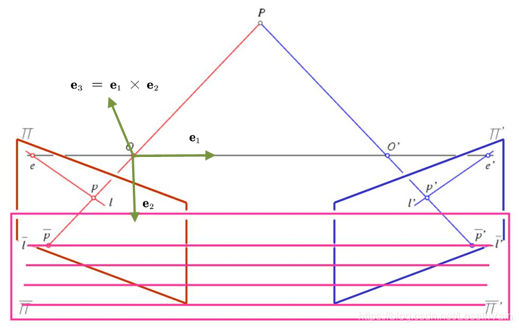
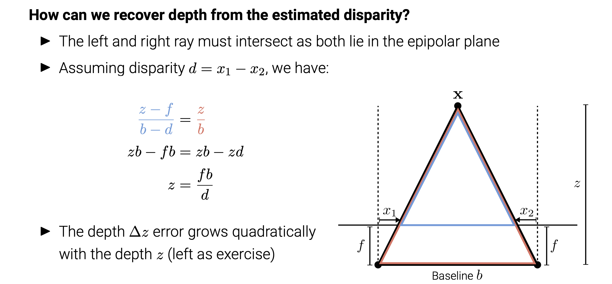
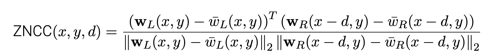
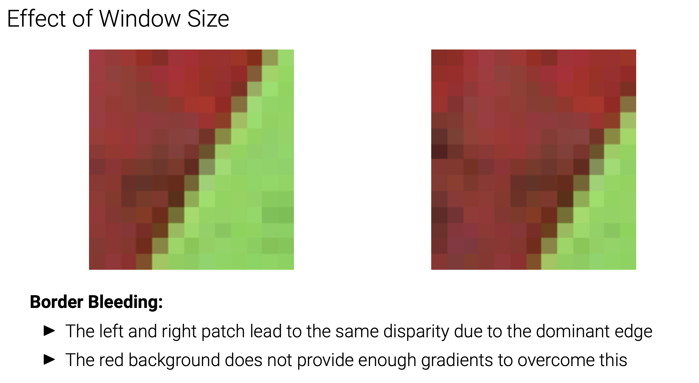

Stereo Reconstruction¶
Preliminaries¶
Epipolar Geometry¶
- A point \(\bar{x}\) in the left image must be located on the epipolar line\(\widetilde{l}_2\)
- This reduces correspondence search to a (much simpler) 1D problem I For VGA images: ∼640 instead of ∼300k hypotheses (factor 480 less)
Image Rectification¶
What if both cameras face exactly the same direction?
- Image planes are co-planar ⇒ Epipoles at infinity, epipolar lines parallel.
- Correspondences search along horizontal scanlines (simplifies implementation)
- Let\(K1 = K2 = R = I\) and\(t = (t,0,0)^⊤\)
- \(\bar{x_2}^T\tilde{E}\bar{x_1}=\bar{x_2}^T \begin{bmatrix}0&0&0\\0&0&-t\\0&t&0\end{bmatrix}\bar{x1}=ty1-ty2=0\)
- Thus \(y1=y2\)
What if the images are not in the required setup?
- There is a trick: We can rewarp them through rotation, mapping both image planes to a common plane parallel to the baseline, this is called
- For this rotation around the camera center, the 3D structure must not be known
How can we make epipolar lines horizontal?

-
Step1:Estimate\(\tilde{E}\) , decompose into \(t\) and \(R\)
-
Step2: Find \(R_{rect}\)
-
Choose \(OO^′=t=(t_x,t_y,t_z)^T\)
- \(e_1=\frac{T}{∣∣T∣∣}\)
- \(e_2=\frac{1}{\sqrt{T_x^2+T_y^2}}(−Ty,Tx,0)^T= [(0, 0, 1)^⊤]×r_1\)
- \(e_3=e_2\) x \(e_1\)
\(\Rightarrow R_{rect}=\begin{bmatrix}e_1^T\\e_2^T\\e_3^T\end{bmatrix}\)
-
Step3:Adjust \(\tilde{x}_i\)
-
Warp pixels in the first image as follows: \(\tilde{x}_1^{'}\)= \(KR_{rect}K_1^{−1}x ̄_1\)
-
Warp pixels in the second image as follows: \(\tilde{x}_2^{'}\)= \(KRR_{rect}K_2^{−1}x ̄_2\)
- NOTE ：Different coordinate systems result in different perception of \(R_{rect}\),Thus the \(R_{rect}^{'}=RR_{rect}\)
-
K is a shared projection matrix that can be chosen arbitrarily (e.g., K = K1)
- In practice, the inverse transformation is used for warping (i.e. query the source)
Disparity to Depth¶

Block Matching¶
- Choosedisparityrange[0,D]
- For all pixels x = (x, y) compute the best disparity ⇒ winner-takes-all (WTA)
- Do this for both images and apply left-right consistency check to remove outliers
Zero Normalized Cross-Correlation¶

Sum of squared differences (SSD)¶
Assumption Violations¶
- Block matching assumes that all pixels inside the window are displaced by d
- This is called the fronto-parallel assumption which is often invalid
-
Slanted surfaces deform perspectively when the viewpoint changes
-
Effect of Window Size
-
Small windows lead to matching ambiguities and noise in the disparity maps
-
Larger windows lead to smoother results, but loss of details and border bleeding
- Border Bleeding:

-
Left-Right Consistency Test:
Siamese Networks¶
Credits to Carnegie Mellon University https://www.cs.cmu.edu/~rsalakhu/papers/oneshot1.pdf
Training¶
Loss Function¶
Hinge Loss:\(L = max(0, m + s_− − s_+)\)
创建日期: 2023年11月5日 21:48:09